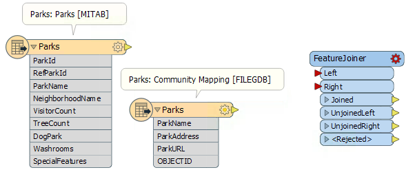
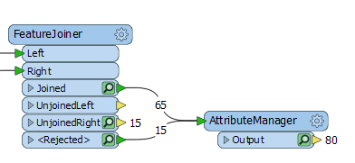

After completing this lesson, you’ll be able to:
In this exercise, you will learn how to use the FeatureJoiner to join two streams of features. The scenario is that you work for a city Parks & Recreation department. You manage the data on parks. Currently, you have one dataset with park information and another with park addresses. These datasets share a common ParkName attribute. You would like to join them together so all the park information is in one table.
1) Open FME Workbench
Download and open the starting workspace template in FME Workbench (2022.0 or later).

Initial workspace reading in Parks.tab and the Parks table from CommunityMapping.gdb
This workspace joins a parks MapInfo TAB dataset with a Parks table from a community mapping geodatabase. The Parks geodatabase table contains addresses and a URL for each park that we want to join to the Parks.tab dataset. We will use ParkName to join the two tables.

Parks MapInfo Tab table [MITAB]

Parks table from CommunityMapping File Geodatabase [FileGDB]
2) Connect the FeatureJoiner
Connect the Parks [MITAB] feature type to the Left input port on the FeatureJoiner and then connect the Parks [FILEGDB] to the Right input port.

Both Park datasets connected to the FeatureJoiner transformer
3) Configure the FeatureJoiner
Then in the FeatureJoiner parameters, set the Join Mode to Left. For the Attribute Conflict Resolution and Geometry Handling parameters, set those to Prefer Left.

FeatureJoiner Join Mode Parameter, all set to Left
Next for Join On set the Left to ParkName and the Right to ParkName then change the Comparison Mode to String (it should work with Automatic, but it's better to be explicit).

Join On parameter set to ParkName for both Left and Right and the Comparison Mode set to String
4) Run Translation and Inspect
Run the translation with Feature Caching Enabled

65 Joined features, 15 UnjoinedRight features, and 15 <Rejected> features
It looks like we have 65 features that were joined, 15 features that were unjoined from the right table, and 15 features that were rejected. Let’s inspect the features that were rejected. Click on the Inspection icon on the Rejected port to inspect the features in the Data Inspector.
Looking at these features, it looks like they are tiny unnamed parks that were built to create traffic calming areas. Since they are unnamed they can’t be joined, but we can still keep them even though they were rejected.
5) Append Features
Add an AttributeManager to the canvas and connect it to both the Joined and Rejected output ports on the FeatureJoiner. The only purpose of adding the AttributeManager is to show that both the joined and rejected features will continue through the rest of the workspace.
Run the translation again with Feature Caching Enabled still and then inspect the AttributeManager output data. We will have 80 features and when we inspect the data both the named and unnamed parks are included in the table.

AttributeManager connected to the Joined and <Rejected> output ports on the FeatureJoiner

The Joined and <Rejected> features shown in the Data Inspector.